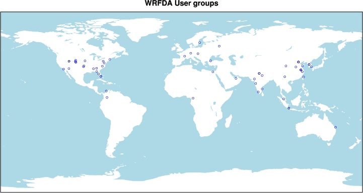

|
 |
WRF Data Assimilation System Users Page
Welcome to the users home page for the Weather
Research and Forecasting (WRF) model data assimilation system (WRFDA). The WRFDA system is
in the public domain and is freely available for community use.
It is designed to be a flexible, state-of-the-art atmospheric data assimilation
system that is portable and efficient on available parallel computing
platforms. WRFDA is suitable for use in a broad range of applications
across scales ranging from kilometers of regional mesoscale to thousands of kilometers of global scales.
The Mesoscale and Microscale Meteorology Division
of NCAR is currently maintaining and supporting a subset of the
overall WRF code (Version 3) that includes:
- WRF Software Framework (WSF)
- Advanced Research WRF (ARW) dynamic solver, including one-way,
two-way nesting and moving nests, grid and observation nudging
- WRF Pre-Processing System (WPS)
- WRF Data Assimilation System (WRFDA)
- Numerous physics packages contributed by WRF partners and
the research community
Other components of the WRF system will be supported
for community use in the future, depending on interest and available
resources.

|
What's new
Presentation of Tutorial for WRF 4D-Var V3.3, 24 June 2011,Boulder
Known Problems for V3.3 (Posted 06/24/11)
WRFDA Version 3.3 Release
12th WRF Users' Workshop, 20 - 24 June 2011, NCAR Foothills Lab in Boulder, CO.
WRF New User Tutorial, 11 - 22 July 2011, NCAR Foothills Lab in Boulder, CO.
WRF for Hurricanes Tutorial, 26 - 29 April 2011 , NCAR Foothills Lab in Boulder, CO.
The 5th East Asia WRF Workshop and Tutorial, Busan, Korea, 11-19 April 2011
Tips for reading BUFR data
Announcements
Known problems
WRF Workshop Presentations .
WRFDA Online Tutorial
(updated on July 2010)
|
Since July 2011 |  | |
 |